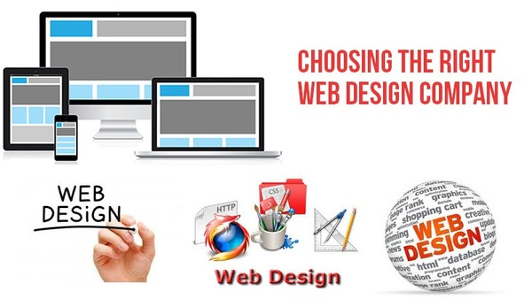

<?xml version="1.0" encoding="UTF-8"?><rss version="2.0"
	xmlns:content="http://purl.org/rss/1.0/modules/content/"
	xmlns:wfw="http://wellformedweb.org/CommentAPI/"
	xmlns:dc="http://purl.org/dc/elements/1.1/"
	xmlns:atom="http://www.w3.org/2005/Atom"
	xmlns:sy="http://purl.org/rss/1.0/modules/syndication/"
	xmlns:slash="http://purl.org/rss/1.0/modules/slash/"
	>

<channel>
	<title>web designing company in dubai &#8211; Blog</title>
	<atom:link href="https://www.ehorizon.ae/blog/tag/web-designing-company-in-dubai/feed/" rel="self" type="application/rss+xml" />
	<link>https://www.ehorizon.ae/blog</link>
	<description></description>
	<lastBuildDate>Thu, 01 Mar 2018 05:29:32 +0000</lastBuildDate>
	<language>en-US</language>
	<sy:updatePeriod>hourly</sy:updatePeriod>
	<sy:updateFrequency>1</sy:updateFrequency>
	<generator>https://wordpress.org/?v=4.4.15</generator>
	<item>
		<title>Things You Should Keep In Mind When Selecting A Web Design Company</title>
		<link>https://www.ehorizon.ae/blog/2016/02/22/things-you-should-keep-in-mind-when-selecting-a-web-design-company/</link>
		<comments>https://www.ehorizon.ae/blog/2016/02/22/things-you-should-keep-in-mind-when-selecting-a-web-design-company/#respond</comments>
		<pubDate>Mon, 22 Feb 2016 10:04:50 +0000</pubDate>
		<dc:creator><![CDATA[eHorizon]]></dc:creator>
				<category><![CDATA[Website Design]]></category>
		<category><![CDATA[web designing company in dubai]]></category>

		<guid isPermaLink="false">https://www.ehorizon.ae/blog/?p=25</guid>
		<description><![CDATA[<p>If you are searching for a web design company in Dubai for your personal or business use, there are certain factors that you should evaluate before confirming any company. This article discusses certain factors that will guide you to make the right decision when selecting a web development firm for developing a decisive reliable, easy [&#8230;]</p>
<p>The post <a rel="nofollow" href="../../../2016/02/22/things-you-should-keep-in-mind-when-selecting-a-web-design-company/index.html">Things You Should Keep In Mind When Selecting A Web Design Company</a> appeared first on <a rel="nofollow" href="../../../index.html">Blog</a>.</p>
]]></description>
				<content:encoded><![CDATA[<p style="text-align: justify;">If you are searching for a <a href="../../../../web-design-services.html">web design company in Dubai</a> for your personal or business use, there are certain factors that you should evaluate before confirming any company. This article discusses certain factors that will guide you to make the right decision when selecting a web development firm for developing a decisive reliable, easy to access website:</p>
<ol style="text-align: justify; margin-top: 30px;">
<li><strong> Know your bottom line</strong></li>
</ol>
<p style="text-align: justify;">Before starting the selection of <a href="../../../../web-development-services.html">web development firm</a>, it is important to have clear internet marketing goals and objectives that work both as guidelines for assessment for the web company to see how well the services and solutions offered against them are delivered. Every company has its own requirement and it is necessary to focus on the various aspects like:</p>
<ul class="service-list" style="margin-top: 30px;">
<li>Conversion of sales</li>
<li>Building and maintaining a customer database</li>
<li>ROI &#8211; return on investment</li>
<li>Brand awareness etc.</li>
</ul>
<div id="attachment_28" style="width: 610px" class="wp-caption aligncenter"><p class="wp-caption-text">Keep In Mind When Selecting A Web Design Company</p></div>
<p style="text-align: justify;">Another important consideration that needs attention is the budget allocation for web development and internet marketing expenses.</p>
<ol style="text-align: justify; margin-top: 30px;" start="2">
<li><strong> Portfolio of the selected web design company</strong></li>
</ol>
<p style="text-align: justify;">It is very important that business owners make a habit of going through the previous work of the company. The kind of features that have to be included in the websites should be evaluated against the needs of the company. The web design company should ask for website samples or examples that were designed for the company previously. Here are few questions that can be asked to a potential web design company:</p>
<ul class="service-list" style="margin-top: 30px;">
<li>The experience of the web design company in the business’s related industry</li>
<li>The different processes that will be or are usually involved</li>
<li>The different methodologies that are used to develop the website, among others.</li>
</ul>
<p style="text-align: justify;">Select a reliable company that has a real office where it is possible to arrange a meeting if needed. To prevent scamming, it would be wiser to visit these offices.</p>
<ol style="text-align: justify; margin-top: 30px;" start="3">
<li><strong> Customer services offered by the web design company</strong></li>
</ol>
<p style="text-align: justify;">Although website development might be done once, but optimizing should be carried on always. The firms that offer excellent customer services that involve prompt call receiving and timely response to queries. This helps in timely response to make updates on websites.</p>
<p style="text-align: justify;">The projects and development strategies must be discussed when selecting or hiring any <a href="../../../../web-design-services.html" target="_blank">web design company in Dubai</a>. It is also important for the web design company to maintain a healthy relationship with clients and work for the maintenance and other requirements of the website.</p>
<hr class="hrline" />
<p>The post <a rel="nofollow" href="../../../2016/02/22/things-you-should-keep-in-mind-when-selecting-a-web-design-company/index.html">Things You Should Keep In Mind When Selecting A Web Design Company</a> appeared first on <a rel="nofollow" href="../../../index.html">Blog</a>.</p>
]]></content:encoded>
			<wfw:commentRss>https://www.ehorizon.ae/blog/2016/02/22/things-you-should-keep-in-mind-when-selecting-a-web-design-company/feed/</wfw:commentRss>
		<slash:comments>0</slash:comments>
		</item>
	</channel>
</rss>

<!-- Localized -->